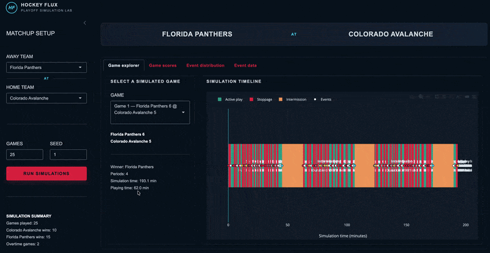

When a flux model needs and estimand.
Have you heard of the flux ecosystem yet? It’s a new R framework for developing dynamic, event-driven probabilistic models via simulation built by Jarrod Dalton of Cleveland Clinic. I highly recommend you check it out starting with the first tutorial here. You can also install the core R package that powers the framework, which was recently released to CRAN, with install.packages("fluxCore").
Background
When I began learning about flux, I started reading the documentation to figure out not only what it is but also how to use it. I spent a lot of time in the tutorials trying to understand concepts, how the code maps to those concepts, and submitting nit-picky issues to GitHub to try to make the code and documentation row together more seamlessly. Then I began trying to apply the framework to a project, manually defining schemas and event processes. I definitely made a lot of progress compared to when I started (i.e., when I knew absolutely nothing about it), but something still didn’t click–I could only get so far without knowing what to do next. I didn’t have any intuition about what the states should be, what processes and events were important, or what outcomes mattered. So trying to learn the flux framework while trying to implement it on a project was rather difficult.
Then it hit me: In order to learn it, I need to work on developing a model for a system that I actually understand.
I had an epiphany: a hockey game.
In that moment not only did I see my path to learning flux become more clear, I already felt like I’d gained intuition about the framework more broadly because I could immediately envision all the components, states, events, and processes that make up a hockey game. The idea of flux became much more valuable.
Simulating the system
And so I began going to down the road of using flux to simulate a hockey game (the codebase is here). I could immediately see some fascinating places you could take this:
- Games themselves are the foundation of the system
- Players could become independent entities in the system that live within the game
- You could even add a Coach entity in order to create policies around the most glaring decision points, like pulling the goalie
- …and so on
But, we need to start somewhere, so I just started small.
Making a game
I began thinking about the simplest foundation I could start building for this model. Namely, it was a game (and more specifically, I narrowed it to an NHL playoff game). So what attributes or states does this type of hockey game have? Some of the obvious things come to mind: game clock, scoreboard, whether play is active or it’s in between whistles/intermission, whether the game is in overtime, how many players are on the ice for each team, where the puck currently is, etc. So I began manually encoding those things in flux syntax.
Then you start to think about events. What sort of things happen during the game? Stuff like: goals are scored, whistles are blown (e.g., icing, penalty, offsides, etc.), the period ends, etc. Similarly, I began encoding these into event-process definitions using quick but reasonable logic. For example, goals are scored through a Poisson process with a default, sensible rate, like this:
goal_event <-
function(entity) {
list(
time_next = entity$last_time + rexp(1, rate = 6 / 3600),
event_type = sample(
x = c("goal_home", "goal_away"),
size = 1,
prob = c(.52, .48)
)
)
}You then define the stoppage criteria for the simulation: the game ends after the third period if the game is not tied, otherwise you keep the simulation going in 20-minute intervals until a goal is scored. Easy enough.
And shortly thereafter I had a “working” simulation: I could create a game entity, set some initial states (like who the teams were) and a simulation would run, accumulating goals and whistles until the game ended and we had a winner. Great!
Adding more detail
Naturally, as I looked at the simulation output, despite it actually producing a “real” shell of a hockey game, there was so much that was not accounted for:
- Intermissions should contribute to simulation time but not game time.
- Puck drops are events. They start the game, each period, and occur after every whistle.
- When penalties occur, the rate of goals should change. Futher, we need to track how long the player(s) are in the penalty box for, and know what the strength is of each team at any given time.
- …the list goes on
So, I invoked an assistant to start rapidly plucking away at these: Codex (if you’re not familiar, it is an AI coding assistant which comes with your $20/month ChatGPT subscription, and I could use it straight in Positron).
It went on for a while. I went back and forth, creating strategies of features I want to add next, asking Codex to build a plan for it, reviewed the plan, had it implement the plan, and then reviewed the implementation so I could follow/understand/validate what is happening as I go (it actually was a pretty good experience overall, feeling like you’re in the drivers seat provided you can maintain that understanding of what’s happening).
And after a bunch of iterations I had an even better model of an NHL playoff game. It now accounted for penalities (and the change in goal scoring rates when they happen), appropriately managed the game clock across all periods, stoppages, intermissions, and overtime separate from simulation time, updated the game status as different events occurred, added puck drops after whistles, etc. I even generated a cool Shiny app that provides an interface to simulate specific matchups and explore results:

I was amazed how fast I could get to this point, and it all seemed like a reasonable representation of a hockey game.
The infinite loop
However, my list of every small nuance kept getting bigger. Even though I had the clock structure and a seemingly reasonable hockey game being simulated, it just wasn’t enough. Different matchups probably need different goal scoring rates, who is on the ice affects what events will occur, where the puck is matters as to whether or not a goal might be scored, and we didn’t even consider yet the concept of a goalie being pulled. There was a long way to go.
And then I realized: The number of nuances that I would need to implement to be satisfied with the simulation was going to be never-ending.
I was in an infinite loop of trying to model the system of an NHL playoff game, with no end in sight.
Simulating an answer (instead)
After a while of hopelessly going back and forth of what detail I wanted to build out in my next model iteration, I’d reached a point of demotivation where I’d just be doing this endlessly. At that point I didn’t even feel like working on it anymore.
It was in that ponderance where I thought of the most fundamental question I should have asked myself right away: What am I actually trying to do with this model?
I realized that I was trying to create the perfect model of a system (i.e, a hockey game) without any sort of direction about what I want to do with it. What question did I want to answer? Did I just want to simulate a hockey game for the hell of it? What decision am I trying to inform? What’s the actual point? It was essentially a fool’s errand.
Invoking the “estimand” concept
So I thought, “How can we start to add some structure, not around the system we’re modeling, but around the actual purpose of why we’re building it in the first place?”. The idea of estimands came to mind.
In this paradigm, we specify the specific quantity we want to estimate, and build our analytic workflow around answering that specific question. This includes modeling design, structure, assumptions, etc. And if we want to answer a slightly different question, even if related to the same topic/context, we might need to adjust the entire thing. So I started excitedly asking myself:
Can this be applied to Flux models?
What if we started with the question we’re trying to answer and then specifically design a simulation model to answer it?
What if it’s not a single hockey game simulator to answer every question about hockey, but rather a model designed to answer a specific hockey question?
These are what led me to see light at the end of the tunnel. Depending on the specific question(s) being asked, we may not need to design the most sophisticated model of the system, but rather a model only complex enough to provide an answer to the question(s).
Counterfactuals and potential outcomes
In the same light, I saw an additional connection point. The entire premise of the potential outcomes framework is that we can only observe, for example, a single patient undergo a single treatment path. That’s the world we live in. There’s an alternate world that exists where the patient didn’t take that treatment at that time (or took another one). But we didn’t observe that one. If we could observe both, then in order to estimate the causal effect of the treatment, we’d literally just look at the difference between the two worlds. Since we can’t observe both, we need all of the fancy methods that make up causal inference to try to deduce what this difference would be had we observed both worlds.
But in flux, we can look at both worlds!
The concepts of decisions, policies, and actions are native to the flux framework. A main feature of it is that you are able to evaluate different decision policies at particular points in time and view the downstream differences in outcomes. From the tutorial:
“Run the same cohort of entities through alternative policies with matched seeds. The only difference between runs is the policy — stochastic paths are identical. Compare trajectory records to quantify the effect of policy changes.”
This is pretty much exactly the idea of potential outcomes.
With the ideas of estimands and counterfactuals in mind, it seemed we could structure a special kind of flux implementation to be centered around a specific causal question around a specific decision that it’s desired to inform. It all seemed to fit together.
Rethinking the hockey logic
With this structured way of thinking in mind, I could move away from just trying to “simulate a hockey game”, and think more about what sort of decision points there are to target that would actually be useful to get an answer to. The obvious one that came to mind: when to pull your goalie.
Now instead of trying to incorporate every last detail around a goalie pull (which is a lot), I thought about the decision process. When does a coach make the decision to pull the goalie? Well, they sort of take in everything that has happened in the game, up until now, and determine if pulling the goalie right now is going to lead to a higher likelihood of them tying up the game than if they leave him in. Thinking of it this way, the contrast becomes more clear. If I want to estimate the causal effect of pulling the goalie with 5 minutes left in the game when a team is down by one goal, I just need to simulate that situation and compare it to an alternative simulation where the goalie was not pulled with 5 minutes left in the game when the team was down by one goal.
What’s more, and the even more important byproduct of this thought process, is that I may not even need to simulate the full hockey game to get my answer (though you could). In fact, everything that happens before the decision point only informs the rate at which the decision situation can occur, but it has no bearing on the causal contrast we’re trying to estimate.
Therefore, the most basic, minimal model needed to get a valid estimate of my contrast of interest could just be one that starts the simulation with a few minutes left in the hockey game. Or, more specifically, at exactly the time of the decision point. The direct, and full, effect of the decision is only captured by what happens afterwards. Everything before that is just adding noise.
That’s not to say you couldn’t get at the estimate from a full game simulation, or incorporating as much real detail as you can into the model. It’s more so the realization that there’s a concept of model sufficiency at play, with a “minimum” criteria (or the idea of a denominator) so to speak, that can provide you with a valid estimate for your contrast. Once you obtain the working “minimum” estimate, you might choose to then incorporate more knowledge, flexibility, assumptions, complexity, etc. to try to improve upon it. But still targeting the same estimand.
Formalizing the framework
I started going down the rabbit hole of formalizing these ideas into a more concrete framework.
Read these two statements: * There’s 5 minutes left in the game, should I pull the goalie now? * There’s 10 minutes left in the game, should I pull the goalie when there’s 5 minutes left in the game?
Different decisions. Different contrasts. Different effects. Different simulations.
- I used AI to generate most of it, while having guidance over everything. It also helped me come to a realization that I’m fine with AI-generated text in certain situations. Given that
flux-estimandis a repo meant to ultimately guide modeling building (through code), I almost view the AI text as a new type of code itself. It’s like it is natural language code optimized to help with downstream tasks (i.e., using the framework repo to guide specific model developments). But in the context of this blog post, for example, I will never use AI because this is intended to be me writing and conveying my thoughts. - Added agents and skills to help users stay true to the framework when implementing it for their own application. The AI helpers are not meant to do everything for you. They are meant to keep you on track and help you clarify things and make clear, important decisions about your model structure as it pertains to the estimand.